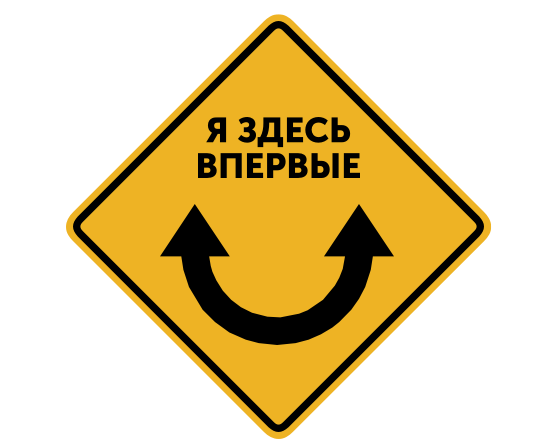

Все знают, что я много путешествую на машине. Все, кто путешествует на машине, также знают, что ориентироваться в новом городе всегда сложно, даже по навигатору, даже, если одновременно не писать об этом в блог.
Нередки ситуации, когда окружающие справедливо думают, что ты олень, а ты в это время просто решаешь куда тебе свернуть, чтобы выехать из центра Саратова на Волгоград. Или ищешь мотель по адресу 2-й Нагорный переулок, дом 8, строение 3. Или ищешь куда закатилась банка бёрна.
Кроме всего прочего, у меня есть графический редактор.
Обстоятельства сложились так, что я придумал ни много ни мало новый знак, аналогов которого нет в мире. Знак клеится на заднее стекло в левый верхний угол.
